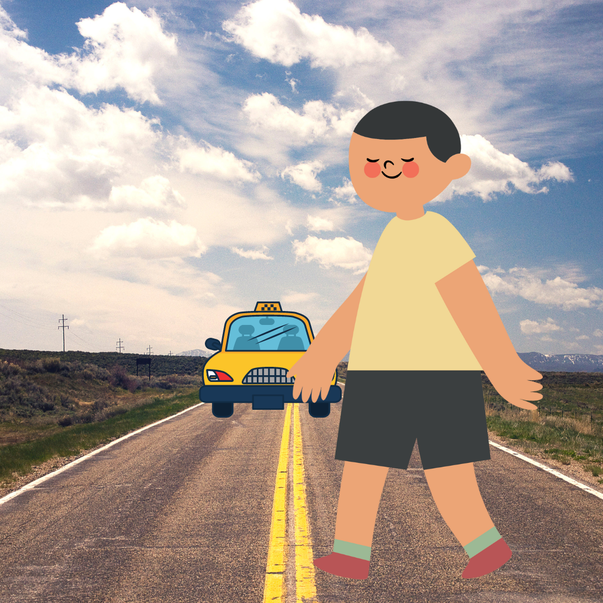

Regresar.
Continuar...
Caso #04
Al llegar a Macondo, se da cuenta que todos hablan diferente, solo hablan con la la vocal i así que todo lo que dirá es con la vocal “i”pedir el taxi. Convertir: "Taxi me puede llevar al hotel mariposas amarillas"
